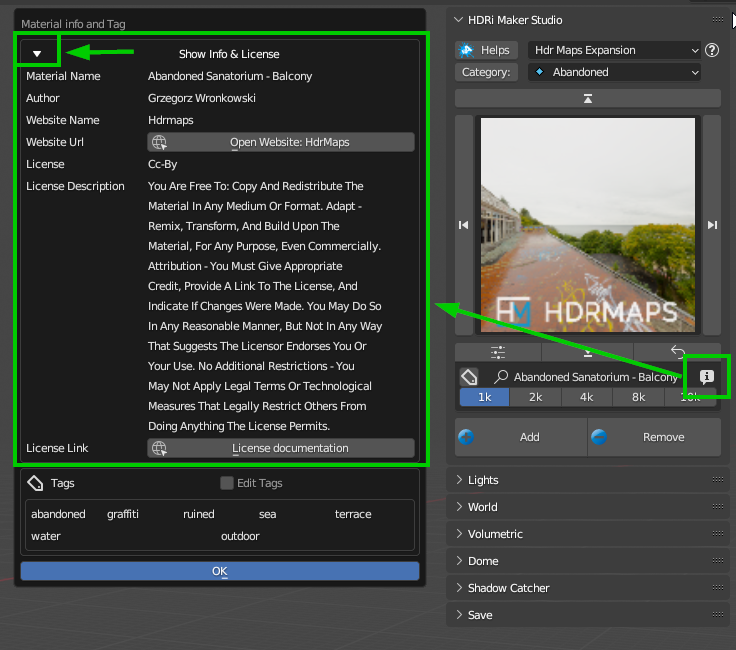

FAQs
Here below there are the most frequent questions and answers about the HDRi Maker addon. Even if you are not interested I invite you to take a look. It could be useful for you.
Happy reading! Andrew_D
Does the addon work with Blender 4.2?
Important
From Blender 4.2 the addons are “Extensions” take a look here at the official page: https://code.blender.org/2024/05/extensions-platform-beta-release/
Yes, all my addons are ready for Blender 4.2 and the new Extension system.
Make sure you have installed the latest version of it, you can find here the list of updates: Updates Log
You will be able to install the addon with the new Blender system. To do this, I recommend uninstalling the version you have already installed, because it could be in the list of “Legacy” Addons, which means 2 things, either you have moved the addon manually to the addons folder (Until Blender 4.1 this was not a problem)
So make sure to:
Uninstall the addon (If you had it installed)
Download the new version of the addon (If you haven’t already downloaded it)
Install the new version of the addon in Blender 4.2
How can I contact you for assistance?
If you have purchased the addon on BlenderMarket, go directly to the addon page and click on “Ask a question” usually I answer within 24 hours
If you have purchased the addon on Gumroad, you can contact me on tredistudio@hotmail.com or info@extreme-addons.com
Which version of Blender is compatible?
The addon is compatible with all versions from 3.0 (Included) onwards.
How many backgrounds are included?
At the moment there are almost 500 Backgrounds Included
Can I use the backgrounds for commercial projects?
Yes, the entire Default library of HDRi Maker is provided under CC0 license, so you can use it even without citing the license. If you want to use the backgrounds contained in the Hdr Maps expansion, you can do it, but you will have to cite the author and the license
In any case I have inserted in each Background the type of license of use. This can be viewed by pressing the Button “Info” as in the image below, a popup opens, and from there you can see the type of license of use.
{kind=link}
Why are the library packages distributed in files of up to 2GB?
This is because there are some users with a slow line, so files too big sometimes reach a timeout on Blendermarket. This was a problem for some users in the past, so I decided to divide the packages into smaller files.
I understand that this is not the best way to distribute the packages, but it is the best solution for everyone.
In addition, those who have a fast line can download all the packages at once, and those who have a slow line can download the packages in more times.
Are updates free?
HDRi Maker was born in 2019 and since then all users who have purchased the addon have received all updates for free. This means that if you buy the addon today, you will have access to all future updates.
So, Yes!
If I bought a version that is not PRO, can I upgrade to PRO in the future?
Yes, you can do it, you will just have to buy the PRO version and you will only pay the difference in price.
Do I have to install all the libraries?
No, it is sufficient to install even only the 1k libraries, which occupy less than 1GB, the minimum to have HDRi Maker working.
Do I need a powerful graphics card?
My advice is undoubtedly yes, but it is not mandatory. The important thing is to have a VRAM large enough, at least 4GB
How much Video Memory is needed for 16k images?
Technically it would be useful to have at least 8GB of VRAM to run GPU rendering with such high resolutions
With which rendering engines can I use HDRi Maker?
Cycles and Eevee are the rendering engines supported by HDRi Maker, support for other rendering engines is not planned at the moment
Is there support?
Of course! You can contact me on https://blendermarket.com/ or on tredistudio@hotmail.com or info@extreme-addons.com
Can I use HDRi Maker on Software other than Blender?
At the moment support for other platforms is not planned, but it is possible that in the future there will be
Can I export the dome as a 3D model?
The addon is primarily built to work in Blender, the addon does not include tools to export the Dome or backgrounds.
The dome export problem is that the nodes that make up the dome material are quite complex, so the only solution would be the Bake of the dome, but the baking also has many problems, first in the “Quality” list after various tests I have decided not to include this tool, as it doesn’t reproduce exactly what the dome does, like capturing shadows only on the plane and not on the top.
Can I import videos as backgrounds?
This is not currently planned for 2 reasons. Videos are currently huge in GB quantity, so we have not yet intended to address the issue. I have also been asked many times if you can import videos made with the normal camera. The answer is yes, but it doesn’t make sense. It’s not a VFX addon, so it’s not planned to use it.
Can I use my HDRs?
Yes, and there are various ways to do it!
You can import an HDR / EXR (or other image files) on the fly simply by pressing SHIFT + the Import button See here Add Button: and selecting the file you want to import.
You can batch import the HDRs or EXRs you need and create your own Category. See here the tutorial Batch Save
You can try to convert a World with the “Try to convert” button if the World has been imported with asset browser, it will try to recover the image and convert it to an HDRi Maker Background Button Here Unknown world Situation
These are 3 simple methods to use HDRs from sources other than HDRi Maker.
Does it work with Blender Asset Browser?
Yes, from version 3.0.110 of HDRi Maker it is possible, but there are some limitations! The Blender Asset Browser for now does not allow you to use a Handler that recognizes the drag and drop, so for now HDRi Maker will be able to have the version of its library also in asset Browser, spending a few minutes, it will be created automatically by HDRi Maker following the procedure described in the “Get Started” section of this manual.
The dome can be modified?
Yes, the dome “Cube” and the dome “Cylinder” can be manually modified to adapt the image to the perimeter of the dome. (Or vice versa)
Will I get a perfect projection with the dome?
No, the projection will never be perfect 100% because the image is without Parallax, but given the wide use that is made today of HDR and EXR images, you can safely say that with HDRi Maker you have an easy and innovative system to manage your domes I personally think that it is the best you can find (But I am biased and my judgment counts little)
What is the User Library for?
The User Library is a library that by default will be empty, it will be a real folder on your computer, and will be managed directly by the addon, it is used to save the materials you have created or modified, to save a material in the user Library take a look at this section: Save
Warning
Do not modify the content of this folder manually, the addon may not work correctly.